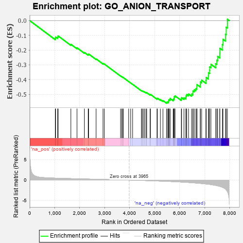
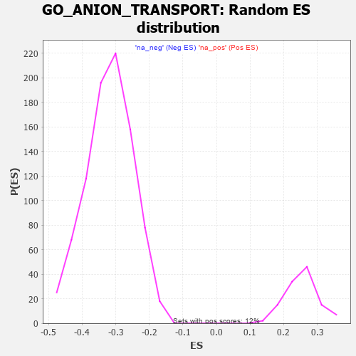

| | | Dataset | 7d |
| Phenotype | NoPhenotypeAvailable |
| Upregulated in class | na_neg |
| GeneSet | GO_ANION_TRANSPORT |
| Enrichment Score (ES) | -0.56010294 |
| Normalized Enrichment Score (NES) | -1.7596226 |
| Nominal p-value | 0.0 |
| FDR q-value | 0.022510866 |
| FWER p-Value | 0.689 |
Table: GSEA Results Summary

Fig 1: Enrichment plot: GO_ANION_TRANSPORT
Profile of the Running ES Score & Positions of GeneSet Members on the Rank Ordered List
| PROBE | GENE SYMBOL | GENE_TITLE | RANK IN GENE LIST | RANK METRIC SCORE | RUNNING ES | CORE ENRICHMENT | | 1 | G6PC3 | | | 1026 | 0.478 | -0.1198 | No |
| 2 | AKT1 | | | 1040 | 0.476 | -0.1113 | No |
| 3 | G6PC | | | 1121 | 0.459 | -0.1117 | No |
| 4 | ATP9B | | | 1139 | 0.456 | -0.1041 | No |
| 5 | RXRA | | | 1647 | 0.365 | -0.1606 | No |
| 6 | GLRA2 | | | 1892 | 0.321 | -0.1847 | No |
| 7 | SYK | | | 2186 | 0.278 | -0.2159 | No |
| 8 | ANO6 | | | 2339 | 0.255 | -0.2297 | No |
| 9 | MIF | | | 2357 | 0.252 | -0.2265 | No |
| 10 | XKR6 | | | 2655 | 0.205 | -0.2598 | No |
| 11 | CLCN7 | | | 2931 | 0.161 | -0.2912 | No |
| 12 | ANO1 | | | 2982 | 0.152 | -0.2943 | No |
| 13 | ACSL4 | | | 3632 | 0.055 | -0.3753 | No |
| 14 | ABCD1 | | | 3677 | 0.047 | -0.3799 | No |
| 15 | NF1 | | | 3713 | 0.040 | -0.3835 | No |
| 16 | HTR1B | | | 3745 | 0.035 | -0.3866 | No |
| 17 | GLRA1 | | | 3957 | 0.001 | -0.4133 | No |
| 18 | CLIC6 | | | 4037 | -0.014 | -0.4230 | No |
| 19 | MTOR | | | 4114 | -0.025 | -0.4322 | No |
| 20 | XKR4 | | | 4466 | -0.087 | -0.4748 | No |
| 21 | NPC2 | | | 4498 | -0.093 | -0.4767 | No |
| 22 | NTRK2 | | | 4543 | -0.104 | -0.4801 | No |
| 23 | SYT4 | | | 4590 | -0.116 | -0.4834 | No |
| 24 | NMUR2 | | | 4646 | -0.127 | -0.4877 | No |
| 25 | CLCN3 | | | 4678 | -0.134 | -0.4888 | No |
| 26 | P2RX4 | | | 4813 | -0.161 | -0.5023 | No |
| 27 | ABCD3 | | | 4829 | -0.164 | -0.5007 | No |
| 28 | DRD2 | | | 5088 | -0.221 | -0.5287 | No |
| 29 | BEST3 | | | 5106 | -0.227 | -0.5260 | No |
| 30 | CLCN2 | | | 5224 | -0.250 | -0.5355 | No |
| 31 | MFSD5 | | | 5326 | -0.279 | -0.5424 | No |
| 32 | CPT1A | | | 5467 | -0.311 | -0.5535 | Yes |
| 33 | FABP4 | | | 5509 | -0.322 | -0.5518 | Yes |
| 34 | FGFR1 | | | 5543 | -0.332 | -0.5490 | Yes |
| 35 | ABCG2 | | | 5556 | -0.335 | -0.5434 | Yes |
| 36 | FOLR2 | | | 5563 | -0.336 | -0.5370 | Yes |
| 37 | MPC1 | | | 5603 | -0.345 | -0.5346 | Yes |
| 38 | CPT2 | | | 5611 | -0.348 | -0.5280 | Yes |
| 39 | ANO8 | | | 5734 | -0.387 | -0.5353 | Yes |
| 40 | PRAF2 | | | 5760 | -0.395 | -0.5300 | Yes |
| 41 | GLRB | | | 5776 | -0.398 | -0.5235 | Yes |
| 42 | ABCG1 | | | 5778 | -0.399 | -0.5151 | Yes |
| 43 | BEST2 | | | 5811 | -0.408 | -0.5105 | Yes |
| 44 | ANO4 | | | 6061 | -0.494 | -0.5315 | Yes |
| 45 | SFXN1 | | | 6073 | -0.497 | -0.5223 | Yes |
| 46 | GOPC | | | 6167 | -0.528 | -0.5229 | Yes |
| 47 | VDAC2 | | | 6242 | -0.553 | -0.5205 | Yes |
| 48 | XPR1 | | | 6250 | -0.555 | -0.5096 | Yes |
| 49 | STK39 | | | 6274 | -0.563 | -0.5005 | Yes |
| 50 | ABCD4 | | | 6349 | -0.597 | -0.4972 | Yes |
| 51 | GLRA3 | | | 6469 | -0.648 | -0.4985 | Yes |
| 52 | VAMP2 | | | 6525 | -0.672 | -0.4912 | Yes |
| 53 | ACE | | | 6526 | -0.674 | -0.4769 | Yes |
| 54 | CLN3 | | | 6580 | -0.699 | -0.4687 | Yes |
| 55 | ACSL5 | | | 6643 | -0.737 | -0.4609 | Yes |
| 56 | MPC2 | | | 6683 | -0.753 | -0.4498 | Yes |
| 57 | CPLX1 | | | 6684 | -0.753 | -0.4338 | Yes |
| 58 | GIPC1 | | | 6819 | -0.826 | -0.4332 | Yes |
| 59 | NMUR1 | | | 6821 | -0.828 | -0.4157 | Yes |
| 60 | ABCA4 | | | 6872 | -0.851 | -0.4039 | Yes |
| 61 | CTNS | | | 7044 | -0.965 | -0.4051 | Yes |
| 62 | GRM5 | | | 7053 | -0.969 | -0.3855 | Yes |
| 63 | CFTR | | | 7143 | -1.030 | -0.3748 | Yes |
| 64 | SYT1 | | | 7148 | -1.033 | -0.3534 | Yes |
| 65 | BEST4 | | | 7192 | -1.065 | -0.3362 | Yes |
| 66 | TSPO | | | 7194 | -1.065 | -0.3137 | Yes |
| 67 | ABCA1 | | | 7243 | -1.113 | -0.2961 | Yes |
| 68 | KMO | | | 7432 | -1.308 | -0.2921 | Yes |
| 69 | CPTP | | | 7477 | -1.373 | -0.2685 | Yes |
| 70 | VDAC1 | | | 7512 | -1.409 | -0.2428 | Yes |
| 71 | GRM2 | | | 7596 | -1.547 | -0.2204 | Yes |
| 72 | BEST1 | | | 7601 | -1.554 | -0.1879 | Yes |
| 73 | RHAG | | | 7701 | -1.769 | -0.1628 | Yes |
| 74 | ANO7 | | | 7727 | -1.838 | -0.1269 | Yes |
| 75 | CLCA1 | | | 7824 | -2.171 | -0.0929 | Yes |
| 76 | TCAF2 | | | 7854 | -2.428 | -0.0449 | Yes |
| 77 | TCAF1 | | | 7901 | -2.803 | 0.0089 | Yes |
Table: GSEA details [plain text format]

Fig 2: GO_ANION_TRANSPORT: Random ES distribution
Gene set null distribution of ES for GO_ANION_TRANSPORT